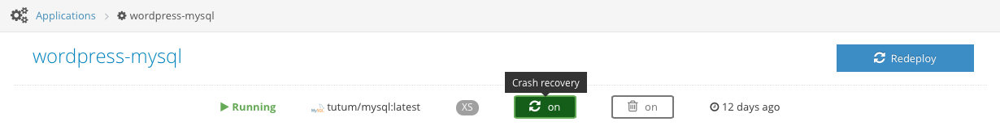

Crash recovery is a Tutum feature that will autorestart and/or autoreplace your containers whenever they crash.
There are two settings related to crash recovery:
Each of these settings have the following options:
If both Autorestart and Autoreplace are activated, Tutum will try to perform Autorestart before Autoreplace.
If they fail to start the container after the number of tries during the periods described above, they will leave the container in Stopped state.
You can specify the autorestart and autoreplace options when launching an application through the API:
POST /api/v1/application/ HTTP/1.1
{
"autorestart": "ON_FAILURE",
"autoreplace": "ALWAYS",
[...]
}
If not provided, both are set to a default value of OFF. See Create and launch a new application for more information.
You can specify the autorestart and autoreplace options when launching an application using the CLI:
$ tutum apps run --autorestart ON_FAILURE --autoreplace ALWAYS [...]
If not provided, both are set to a default value of OFF. See Command-line Interface for more information.
At the moment, activating the Crash recovery setting on the Application configuration step of the Launch new application wizard sets both autorestart and autoreplace settings to ALWAYS.
The default value is to be deactivated which will set both options to OFF.
You can set the autorestart and autoreplace options after the application has been deployed through the API:
PATCH /api/v1/application/(uuid)/ HTTP/1.1
{
"autorestart": "ON_FAILURE",
"autoreplace": "ALWAYS"
}
See Update an application for more information.
You can set the autorestart and autoreplace options after the application has been deployed using the CLI:
$ tutum apps set --autorestart ON_FAILURE --autoreplace ALWAYS (name or uuid)
See Command-line Interface for more information.
You can also activate or deactivate Crash Recovery to an application after it has been deployed from within the application detail page.
You can click on the Crash Recovery button to turn the feature ON or OFF. The behaviour of this settings is the same as activating it on the Application configuration step of the Launch new application wizard.